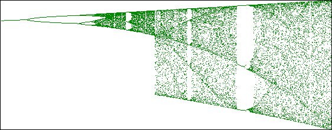
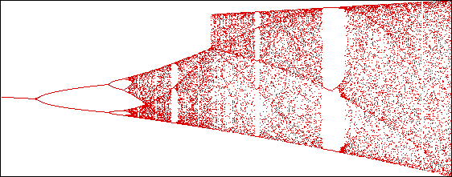
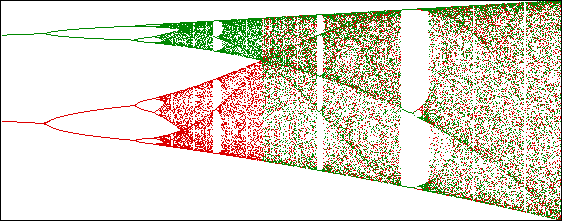

Here we see bifurcation diagrams for L2(x),
The s-value where both diagrams seem to expand outward to the full bifurcation diagram is exactly the value where the graphs extend outside the trapping squares.
(But is the full diagram really
full? Can you see some differences bewteen the red and green pieces? Look in the
|  |
|  |
| Combing the two does give the full bifurcation diagram. |
|  |
return to outside the trapping square.